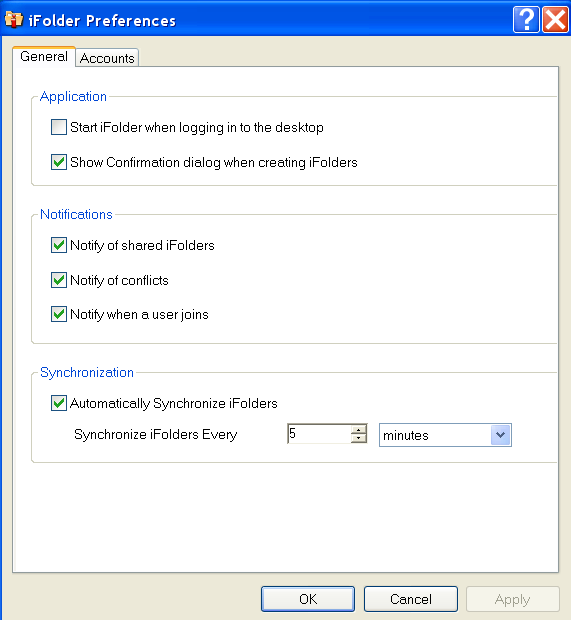
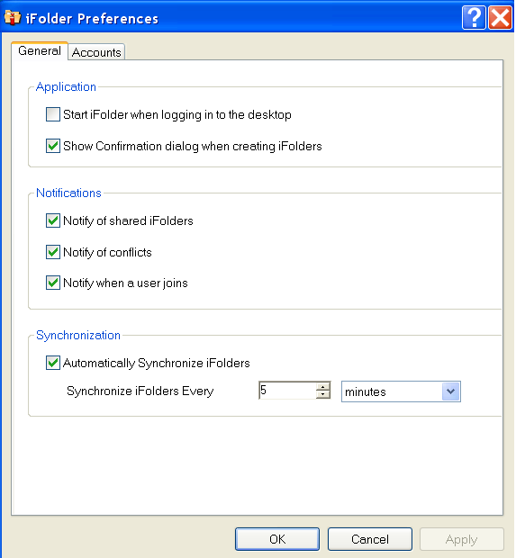

|
|
Select this option to launch iFolder
whenever you log in with the local username where you set up the
iFolder account. For those accounts where you have enabled , synchronization occurs in the background
at the specified Synchronization Interval.
Deselect this option to start iFolder manually. |
|
|
Select this option to receive a confirmation
message each time you create an iFolder, in addition to the normal
visual cues such as the iFolder appearing in the list of iFolders.
Deselect this option to stop receiving the confirmation message. |
|
|
Select this option to enable a pop-up
message in the Notification area whenever you receive a new invitation
to share an iFolder.
Invitations are retrieved based on the you specify in iFolder Preferences. The interval
controls the synchronization of files, iFolder share invitations,
and the list of users. You can also click to
update invitations on demand.
Deselect this option to disable the pop-up message behavior
for invitations. |
|
|
Select this option to enable a pop-up
message in the Notification area whenever a conflict occurs when
synchronizing files.
Deselect this option to disable the pop-up message behavior
for synchronization conflicts. |
|
|
Select this option to enable a pop-up
message in the Notification area whenever a user accepts an invitation
to share an iFolder. Acceptance is keyed to when the user actually
sets up the iFolder on his or her own computer.
Deselect this option to disable the pop-up message behavior
for user share confirmation. |
|
|
If you use the iFolder client with Novell iFolder 3.x,
the effective minimum synchronization interval is always the largest
value of the following settings:
- The system policy (default of zero
(0), unless there is a user policy set. If a
user policy is set, the user policy overrides the system policy,
whether the user policy is larger or smaller in value.
- The local machine policy, or the setting on the
client machine synchronizing with the server.
- The iFolder (collection) policy.
|
 in
the Notification area, then select to
open the iFolder Preferences dialog box to the tab.
in
the Notification area, then select to
open the iFolder Preferences dialog box to the tab.